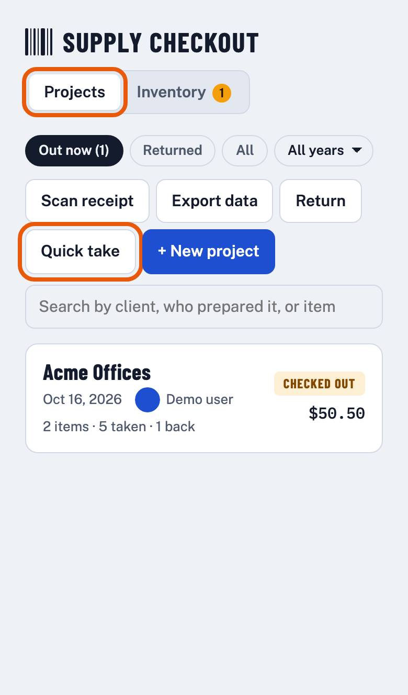
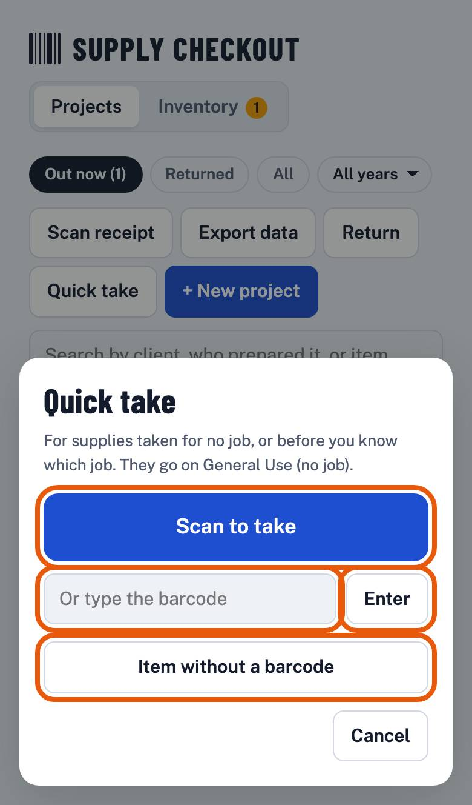
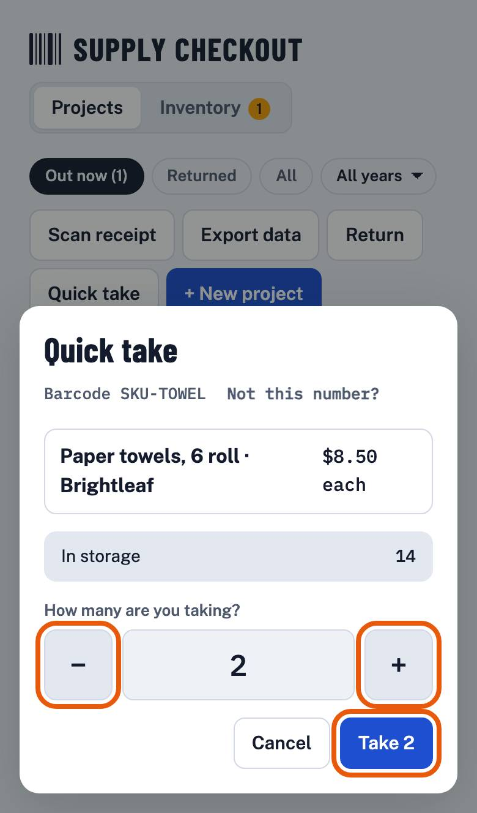
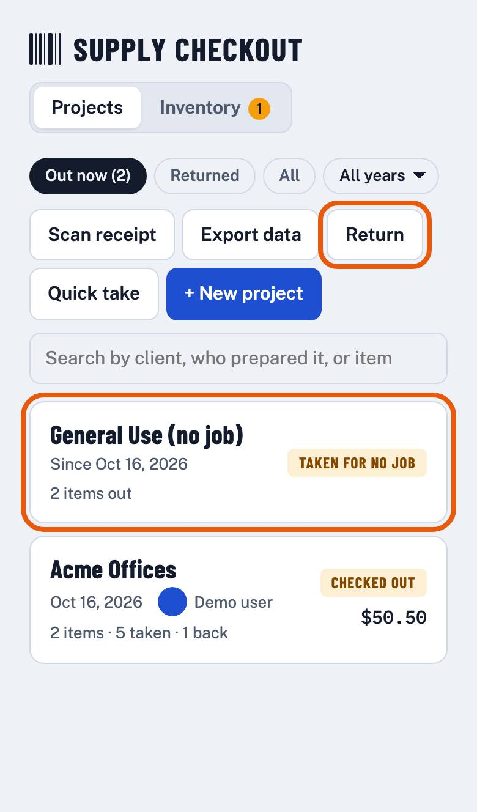
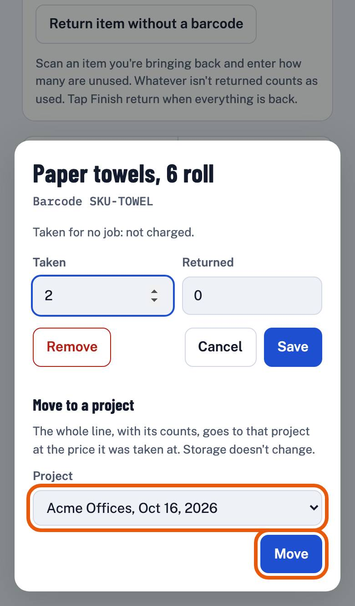
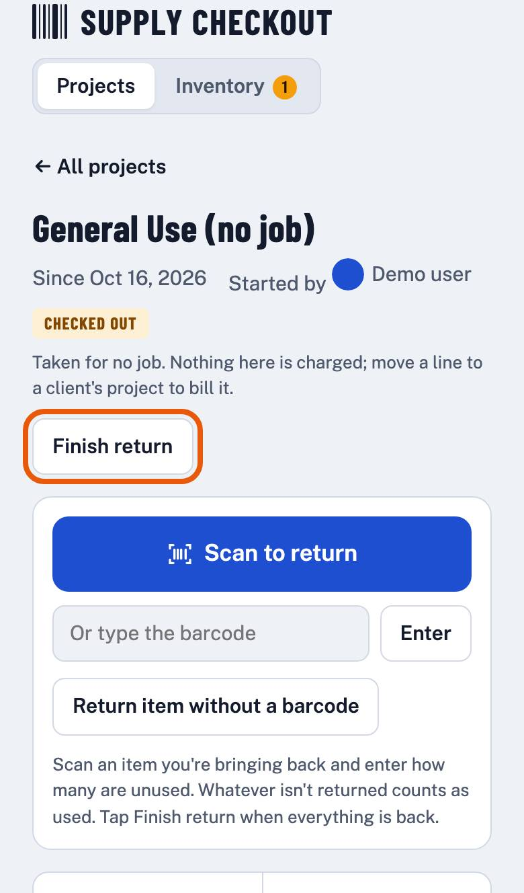

How-to Lesson 2
Take supplies without a job
About this lesson
- What you'll do
- Take something from storage when there's no job for it yet, like a box of gloves for the van. Bring it back, or charge it to a client later.
- How long it takes
- About 3 minutes. A quick take itself is a few seconds.
- You need
- A phone with a camera, signed in to Supply Checkout.
-
Step 1 of 6
Tap Quick take
On Projects, tap Quick take. You don't need to start a project.

-
Step 2 of 6
Scan what you're taking
Tap Scan to take and point the camera at the barcode. Or type the number in Or type the barcode and tap Enter.
No barcode on it? Tap Item without a barcode and pick it from the list.

-
Step 3 of 6
Say how many
Tap + or − to set how many, then tap Take 2 (the number is how many you chose). Storage counts go down right away.

-
Step 4 of 6
Find it on General Use
What you took is on General Use (no job), at the top of the project list. Nothing on it is charged to anyone.
Bringing something back? Tap Return on the project list and scan it. It goes back to the project it's out on; if it's out on more than one, pick which.

-
Step 5 of 6
Turns out it was for a client? Move it
Open General Use (no job) and tap the item's line. Under Move to a project, pick the client's project in Project and tap Move. The client is charged for it on their project.

-
Step 6 of 6
Van restocked? Finish General Use
Open General Use (no job) and tap Finish return. Anything not returned counts as used. The next quick take starts a new General Use.
